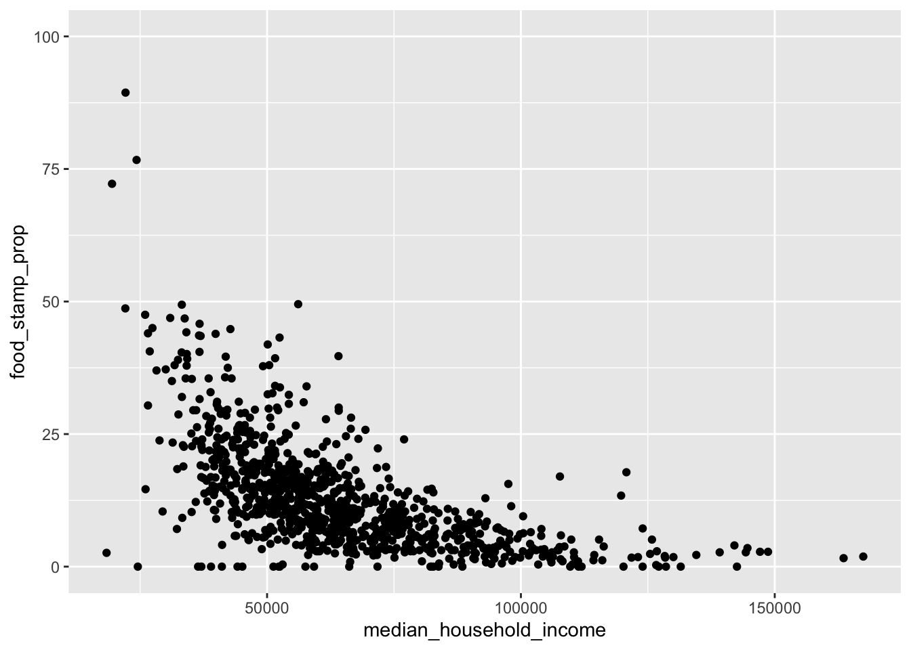
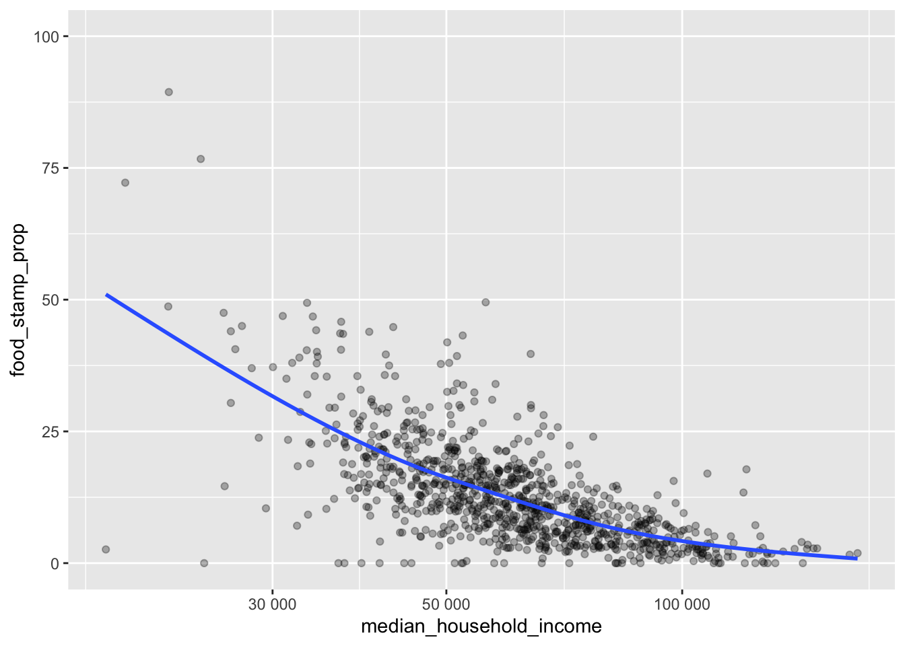

library(tidyverse)Lesson 13: Exploring Data with the Tidyverse
Review
What have we learned so far this semester?
- Writing reports with Quarto
- Plots with
ggplot2 - Vectors
- Importing and wrangling data with
readr,tibble, anddplyr - Manipulating strings with
stringr - Writing functions and applying them with
purrr
Overview
In this lesson, we will combine all of the skills we have learned so far to explore data with the Tidyverse. In terms of “new” content, this lesson is shorter, but that is to leave plenty of time to work on the homework at the end of this lesson.
Reading, Videos, and Assignments
Importing Data
We will work through some of the American Community Survey data from the U.S. Census Bureau. If you have not yet done so, download the ACS “food stamps” data (“FOOD STAMPS/Supplemental Nutrition Assistance Program (SNAP) American Community Survey 5-Year Estimates”) for 2021 (use the steps we worked out in Lesson 08).
The Raw Data
You should have already downloaded the raw data in lesson 8. However, if you did not complete that exercise, download the data and metadata from the GitHub repository for this class. You should have a metadata file called ACSST5Y2021.S2201-Column-Metadata.csv which explains all the variable names and a data file called ACSST5Y2021.S2201-Data.csv that contains some of the features of interest.
Read the Data
Now that you have raw data files, import them into R (you will have to update the path to these data sets based on how you saved these files on your computer). ACS data files often have more than one row of column names (the first row is a unique ID for the column, and sometimes the next 1-2 rows are metadata about the column). In our case, we have character information we don’t want at the tops of our columns, so we will import the column names first, then import the data.
SNAP Data Values
We first define a path to our data values (remember to update this to match your machine), then we import only the column headers for this data (that’s the n_max = 0 part). After we have the names we want, we can import the rest of the data—skipping the first two rows—but using the names we calculated in the step before.
data_path <- "../_data/ACSST5Y2021_S2201/ACSST5Y2021.S2201-Data.csv"
colNames_char <- names(read_csv(data_path, n_max = 0))New names:
Rows: 0 Columns: 459
── Column specification
──────────────────────────────────────────────────────── Delimiter: "," chr
(459): GEO_ID, NAME, S2201_C01_001E, S2201_C01_001M, S2201_C01_002E, S22...
ℹ Use `spec()` to retrieve the full column specification for this data. ℹ
Specify the column types or set `show_col_types = FALSE` to quiet this message.
• `` -> `...459`FLallZIP_df <- read_csv(
file = data_path,
col_names = colNames_char,
skip = 2
)Rows: 1013 Columns: 459
── Column specification ────────────────────────────────────────────────────────
Delimiter: ","
chr (236): GEO_ID, NAME, S2201_C01_034E, S2201_C01_034M, S2201_C02_001E, S22...
dbl (222): S2201_C01_001E, S2201_C01_001M, S2201_C01_002E, S2201_C01_002M, S...
lgl (1): ...459
ℹ Use `spec()` to retrieve the full column specification for this data.
ℹ Specify the column types or set `show_col_types = FALSE` to quiet this message.The meta-data doesn’t need those tricks. We can import it as is.
FLmetadata_df <- read_csv(
file = "../_data/ACSST5Y2021_S2201/ACSST5Y2021.S2201-Column-Metadata.csv"
)Rows: 458 Columns: 2
── Column specification ────────────────────────────────────────────────────────
Delimiter: ","
chr (2): Column Name, Label
ℹ Use `spec()` to retrieve the full column specification for this data.
ℹ Specify the column types or set `show_col_types = FALSE` to quiet this message.Inspect Data Sets
Let’s get an idea of what is in these data sets:
FLallZIP_df# A tibble: 1,013 × 459
GEO_ID NAME S2201_C01_001E S2201_C01_001M S2201_C01_002E S2201_C01_002M
<chr> <chr> <dbl> <dbl> <dbl> <dbl>
1 860Z200US3… ZCTA… 11090 672 5276 611
2 860Z200US3… ZCTA… 2354 378 1300 272
3 860Z200US3… ZCTA… 1383 231 574 106
4 860Z200US3… ZCTA… 5480 430 2172 294
5 860Z200US3… ZCTA… 5 11 5 11
6 860Z200US3… ZCTA… 7220 403 3636 322
7 860Z200US3… ZCTA… 8127 544 3524 323
8 860Z200US3… ZCTA… 0 14 0 14
9 860Z200US3… ZCTA… 1915 425 1096 177
10 860Z200US3… ZCTA… 16526 728 9846 654
# ℹ 1,003 more rows
# ℹ 453 more variables: S2201_C01_003E <dbl>, S2201_C01_003M <dbl>,
# S2201_C01_004E <dbl>, S2201_C01_004M <dbl>, S2201_C01_005E <dbl>,
# S2201_C01_005M <dbl>, S2201_C01_006E <dbl>, S2201_C01_006M <dbl>,
# S2201_C01_007E <dbl>, S2201_C01_007M <dbl>, S2201_C01_008E <dbl>,
# S2201_C01_008M <dbl>, S2201_C01_009E <dbl>, S2201_C01_009M <dbl>,
# S2201_C01_010E <dbl>, S2201_C01_010M <dbl>, S2201_C01_011E <dbl>, …There are 457 columns of information (459 - 2 index columns), and it looks like all of these columns have bizarre codes for their names.
Now for the metadata:
FLmetadata_df# A tibble: 458 × 2
`Column Name` Label
<chr> <chr>
1 GEO_ID Geography
2 NAME Geographic Area Name
3 S2201_C01_001E Estimate!!Total!!Households
4 S2201_C01_001M Margin of Error!!Total!!Households
5 S2201_C01_002E Estimate!!Total!!Households!!With one or more people in the h…
6 S2201_C01_002M Margin of Error!!Total!!Households!!With one or more people i…
7 S2201_C01_003E Estimate!!Total!!Households!!No people in the household 60 ye…
8 S2201_C01_003M Margin of Error!!Total!!Households!!No people in the househol…
9 S2201_C01_004E Estimate!!Total!!Households!!Married-couple family
10 S2201_C01_004M Margin of Error!!Total!!Households!!Married-couple family
# ℹ 448 more rowsThe first column of this data looks exactly like the crazy column names of the main data set. This information should allow us to find out what the column codes mean.
Exercise
Spend some time looking through the columns of this dataset and their classes. Many of the columns are numeric and many are character; some columns that are character shouldn’t be. Discuss this with your neighbours and think about solutions to figure out how to detect columns that should be numeric but are not.
Updated Summary Function
Recall our lesson on functions last week. Based on this lesson, we are able to write an updated version of the summary() function. Our summary function should print the most common unique values for character information, but call the summary() function as normal for anything else:
MySummary <- function(x){
if (is.character(x)){
table(x) %>%
sort(decreasing = TRUE) %>%
head()
} else {
summary(x)
}
}Apply to the Raw Data
Now that we have an updated function to take summaries of a tibble across the columns, let’s apply it to each column of the data (because this will print almost 500 results, we will apply this function to a random set of 50 columns as an example):
set.seed(12345)
# The first two columns are ZIP codes and geography IDs
randColumns_idx <- sort(sample(3:ncol(FLallZIP_df), size = 50))
map(FLallZIP_df[, randColumns_idx], MySummary)$S2201_C01_006M
Min. 1st Qu. Median Mean 3rd Qu. Max.
5.0 64.0 141.0 159.3 227.0 715.0
$S2201_C01_007M
Min. 1st Qu. Median Mean 3rd Qu. Max.
2.0 109.0 220.0 235.8 337.0 959.0
$S2201_C01_008M
Min. 1st Qu. Median Mean 3rd Qu. Max.
6.0 199.0 392.0 384.2 541.0 1272.0
$S2201_C01_013E
Min. 1st Qu. Median Mean 3rd Qu. Max.
0.0 107.0 397.0 599.2 877.0 4735.0
$S2201_C01_018M
Min. 1st Qu. Median Mean 3rd Qu. Max.
4.0 35.0 86.0 104.4 146.0 672.0
$S2201_C01_019M
Min. 1st Qu. Median Mean 3rd Qu. Max.
5.0 67.0 133.0 151.1 214.0 725.0
$S2201_C01_020M
Min. 1st Qu. Median Mean 3rd Qu. Max.
6.0 198.0 389.0 382.9 541.0 1272.0
$S2201_C01_026E
Min. 1st Qu. Median Mean 3rd Qu. Max.
0 71 370 1103 1251 18704
$S2201_C01_030M
Min. 1st Qu. Median Mean 3rd Qu. Max.
3.0 22.0 78.0 111.9 161.0 629.0
$S2201_C01_031M
Min. 1st Qu. Median Mean 3rd Qu. Max.
2.0 57.0 154.0 204.1 293.0 1084.0
$S2201_C01_038E
Min. 1st Qu. Median Mean 3rd Qu. Max.
0 624 2028 2496 3744 12111
$S2201_C02_002M
x
3.3 ** 3.4 3.5 2.8 3.2
38 33 33 32 31 30
$S2201_C02_005M
x
3.0 3.2 ** 2.5 2.6 2.8
34 34 33 32 31 29
$S2201_C02_009E
x
- 0.0 25.2 20.5 22.5 24.0
33 24 11 7 7 7
$S2201_C02_014E
x
0.0 0.1 0.2 0.3 0.4 -
475 121 97 81 58 33
$S2201_C02_015M
x
3.1 ** 2.9 3.2 3.3 2.8
36 33 33 33 32 28
$S2201_C02_024E
x
- 100.0 78.8 69.0 74.1 74.9
33 17 9 8 8 8
$S2201_C02_031E
x
0.0 - 3.4 3.0 2.3 3.5
73 33 20 18 15 15
$S2201_C02_033E
x
- 100.0 0.0 85.3 77.3 83.2
33 33 6 6 5 5
$S2201_C02_033M
x
3.5 3.7 ** 2.9 3.2 3.0
37 36 33 33 32 31
$S2201_C02_036M
x
** 3.1 3.7 3.4 2.8 3.6
38 28 27 25 24 21
$S2201_C02_038M
x
** 5.0 4.1 4.5 4.7 3.9
38 28 25 25 24 23
$S2201_C03_007M
Min. 1st Qu. Median Mean 3rd Qu. Max.
3.0 42.0 106.0 132.8 192.0 603.0
$S2201_C03_020M
Min. 1st Qu. Median Mean 3rd Qu. Max.
4.0 40.0 96.0 119.6 171.0 568.0
$S2201_C03_028M
Min. 1st Qu. Median Mean 3rd Qu. Max.
2.00 14.00 23.00 28.65 30.00 266.00
$S2201_C03_030E
Min. 1st Qu. Median Mean 3rd Qu. Max.
0.00 0.00 7.00 58.42 63.00 1076.00
$S2201_C03_030M
Min. 1st Qu. Median Mean 3rd Qu. Max.
3.00 17.00 25.00 50.47 60.00 568.00
$S2201_C03_032M
Min. 1st Qu. Median Mean 3rd Qu. Max.
3 22 68 120 173 795
$S2201_C03_033M
Min. 1st Qu. Median Mean 3rd Qu. Max.
5.0 57.0 118.0 130.6 185.0 606.0
$S2201_C03_034M
x
** *** 12937 3422 5566 6141
223 2 2 2 2 2
$S2201_C04_002M
x
** 9.8 12.6 8.4 100.0 10.1
81 15 12 11 10 9
$S2201_C04_015E
x
- 100.0 0.0 60.2 48.9 45.5
81 36 9 8 7 5
$S2201_C04_015M
x
** 10.3 13.4 11.5 11.2 11.3
81 12 11 10 9 9
$S2201_C04_016E
x
0.0 - 6.9 12.1 6.7 7.5
92 81 10 9 9 9
$S2201_C04_019M
x
** 4.5 3.7 5.3 4.1 4.6
81 17 16 15 13 13
$S2201_C04_029M
x
** 1.8 1.1 1.9 1.5 1.7
81 17 16 14 13 13
$S2201_C04_030M
x
** 3.6 4.5 2.7 2.9 2.1
81 13 13 12 12 11
$S2201_C04_033M
x
** 10.8 100.0 8.1 16.5 10.2
81 10 10 10 9 8
$S2201_C05_005M
Min. 1st Qu. Median Mean 3rd Qu. Max.
2.0 113.0 226.0 241.5 343.0 1152.0
$S2201_C05_012M
Min. 1st Qu. Median Mean 3rd Qu. Max.
2.00 34.00 81.00 98.49 141.00 479.00
$S2201_C05_023M
Min. 1st Qu. Median Mean 3rd Qu. Max.
3.0 161.0 278.0 288.6 401.0 1050.0
$S2201_C05_024M
Min. 1st Qu. Median Mean 3rd Qu. Max.
6.0 267.0 487.0 474.8 654.0 1448.0
$S2201_C05_025M
Min. 1st Qu. Median Mean 3rd Qu. Max.
6.0 252.0 457.0 434.5 595.0 1337.0
$S2201_C05_029E
Min. 1st Qu. Median Mean 3rd Qu. Max.
0.000 0.000 0.000 3.098 0.000 121.000
$S2201_C05_036E
Min. 1st Qu. Median Mean 3rd Qu. Max.
0.0 235.0 651.0 859.6 1175.0 14985.0
$S2201_C06_005E
x
0.0 - 11.3 10.7 12.7 8.5
36 35 12 11 11 11
$S2201_C06_007E
x
0.0 - 6.2 8.3 8.0 3.7
47 35 19 16 15 13
$S2201_C06_018M
x
0.8 0.9 1.0 1.1 1.4 1.2
67 60 57 53 53 51
$S2201_C06_022E
x
100.0 - 91.6 92.8 92.7 91.3
39 35 15 15 13 12
$S2201_C06_035E
(X)
1013 It looks like many of these columns (such as S2201_C02_002M or S2201_C06_022E) have numeric data stored as character information, probably because the symbols "-", "**", and "***" are used in some columns. From my experience, these symbols mark various types of missing data.
Exercise
Find out what these symbols mean. Where should you look? Write the definitions of these symbols as comments in your analysis script, and state the source of this information.
If we were planning to perform an analysis of all these features, then we should write code to go through these columns to 1) replace the "-" and "**" with NA_real_, and 2) transform these columns to numeric. However, we only need a few columns from this data set. Therefore, we will fix these issues only for the columns we need (after we find out what those columns are).
Review: Basic String Functions
Because the column name look-up table and many of the data columns contain character information, we need to review a few basic functions from the stringr package (included in the tidyverse).
Detecting Strings
From looking at the columns in the metadata table, it would probably be helpful to find if a word or phrase is contained in a character string. This is the function of str_detect(). As an example, let’s see if any of the features are specific to Hispanic households:
FLmetadata_df %>%
pull(Label) %>%
str_detect(pattern = "Hispanic") %>%
table().
FALSE TRUE
434 24 As we can see, this function returns a logical vector indicating if the string "Hispanic" is in the elements of the Label column, then the table() function tells us this information is present in only a handful of the columns. By itself, this isn’t helpful: we don’t know what the strings are, and we certainly don’t know which rows of the tibble they belong to. But at least we know that we have some data on Hispanic households.
To solve these problems, we combine str_detect() with mutate() and filter():
FLmetadata_df %>%
mutate(Hispanic_logi = str_detect(Label, "Hispanic")) %>%
filter(Hispanic_logi) %>%
select(-Hispanic_logi)# A tibble: 24 × 2
`Column Name` Label
<chr> <chr>
1 S2201_C01_032E Estimate!!Total!!Households!!RACE AND HISPANIC OR LATINO ORIG…
2 S2201_C01_032M Margin of Error!!Total!!Households!!RACE AND HISPANIC OR LATI…
3 S2201_C01_033E Estimate!!Total!!Households!!RACE AND HISPANIC OR LATINO ORIG…
4 S2201_C01_033M Margin of Error!!Total!!Households!!RACE AND HISPANIC OR LATI…
5 S2201_C02_032E Estimate!!Percent!!Households!!RACE AND HISPANIC OR LATINO OR…
6 S2201_C02_032M Margin of Error!!Percent!!Households!!RACE AND HISPANIC OR LA…
7 S2201_C02_033E Estimate!!Percent!!Households!!RACE AND HISPANIC OR LATINO OR…
8 S2201_C02_033M Margin of Error!!Percent!!Households!!RACE AND HISPANIC OR LA…
9 S2201_C03_032E Estimate!!Households receiving food stamps/SNAP!!Households!!…
10 S2201_C03_032M Margin of Error!!Households receiving food stamps/SNAP!!House…
# ℹ 14 more rowsThis is a very nice result: we used the mutate() function to add a column of TRUE or FALSE values to the data frame to indicate if "Hispanic" was present in the column names (in the Label column). Then, we selected all of the rows where this indicator was TRUE, and then removed the indicator (because we no longer needed it).
Exercises
- I explained the code above in a short paragraph after the code. Is this the best way? (Hint: think about how we document functions and why.) Can you add a few comments to the code itself to explain what each line is doing?
- Try to find “HISPANIC” and “hispanic”. What can we do to modify the metadata so that one search will find all the rows we might want?
- Many of the rows in the meta-data are not going to be any use to use at all. Can you brainstorm a
stringr::pipeline that will clean up the meta-data table to make it easier for us to go through?
String Cases
Because R is case sensitive, the string "Hispanic" and "HISPANIC" are not the same. We can use the str_to_upper() and str_to_lower() functions to convert all of the string data to the same case (so our searches don’t fail). In this case, we have to make sure to save the new tibble:
FLmetadata2_df <-
FLmetadata_df %>%
mutate(Label = str_to_lower(Label))
# Did it work?
FLmetadata2_df %>%
mutate(Hispanic_logi = str_detect(Label, "hispanic")) %>%
filter(Hispanic_logi) %>%
select(-Hispanic_logi)# A tibble: 108 × 2
`Column Name` Label
<chr> <chr>
1 S2201_C01_025E estimate!!total!!households!!race and hispanic or latino orig…
2 S2201_C01_025M margin of error!!total!!households!!race and hispanic or lati…
3 S2201_C01_026E estimate!!total!!households!!race and hispanic or latino orig…
4 S2201_C01_026M margin of error!!total!!households!!race and hispanic or lati…
5 S2201_C01_027E estimate!!total!!households!!race and hispanic or latino orig…
6 S2201_C01_027M margin of error!!total!!households!!race and hispanic or lati…
7 S2201_C01_028E estimate!!total!!households!!race and hispanic or latino orig…
8 S2201_C01_028M margin of error!!total!!households!!race and hispanic or lati…
9 S2201_C01_029E estimate!!total!!households!!race and hispanic or latino orig…
10 S2201_C01_029M margin of error!!total!!households!!race and hispanic or lati…
# ℹ 98 more rowsWe certainly found more rows this time!
“Saving” your work
When working with strings, DO NOT write the new object into the container holding the old object (don’t “overwrite” your data). Strings are incredibly difficult to work with at times, so make sure you can always go back a few steps. This is why I saved the new look-up table with a different name. Personally, I usually append a number to the name of the object when I’m working with strings; then, when I’m sure I have done all the string clean-up I need, I save it with a better name and use rm() to remove the intermediate steps I no longer need.
In the dictionary/look-up table, we have all the information necessary to find the columns we want. However, before we dig into the look-up table, we notice that all of the rows are copied twice: one for estimate, and one for margin of error. For now, we aren’t interested in the margins of error, so let’s remove these rows:
FLmetadata3_df <-
FLmetadata2_df %>%
mutate(MOE = str_detect(Label, "margin of error")) %>%
filter(!MOE) %>%
select(-MOE)
# Check
FLmetadata3_df# A tibble: 230 × 2
`Column Name` Label
<chr> <chr>
1 GEO_ID geography
2 NAME geographic area name
3 S2201_C01_001E estimate!!total!!households
4 S2201_C01_002E estimate!!total!!households!!with one or more people in the h…
5 S2201_C01_003E estimate!!total!!households!!no people in the household 60 ye…
6 S2201_C01_004E estimate!!total!!households!!married-couple family
7 S2201_C01_005E estimate!!total!!households!!other family:
8 S2201_C01_006E estimate!!total!!households!!other family:!!male householder,…
9 S2201_C01_007E estimate!!total!!households!!other family:!!female householde…
10 S2201_C01_008E estimate!!total!!households!!nonfamily households
# ℹ 220 more rows
Exercises
- The meta-data table has information on whether the number is an estimate of the raw count (
total!!) or an estimate of the population proportion (percent!!). Usestringr::functions to remove this information from the “Label” column and add it to its own column. - Can you easily break the “Label” column into any other pieces without losing information?
Sanity Checks
Often we have some idea of a pre-existing relationship in the data; e.g, we know that there should be a clear negative relationship between food stamp use and household income within a ZIP code. If our data does not show something we know to be true, then we check that we have the right data and that we are reading the data dictionary correctly.
Find the “Food Stamps” Metric
We will use the same process as above (mutate() + str_detect() + filter()) to find all the columns that measure food stamp usage as a percentage:
FLmetadata3_df %>%
mutate(foodStamps_logi = str_detect(Label, "food stamps")) %>%
mutate(percent_logi = str_detect(Label, "percent")) %>%
filter(foodStamps_logi & percent_logi) %>%
select(-foodStamps_logi, -percent_logi)# A tibble: 76 × 2
`Column Name` Label
<chr> <chr>
1 S2201_C04_001E estimate!!percent households receiving food stamps/snap!!hous…
2 S2201_C04_002E estimate!!percent households receiving food stamps/snap!!hous…
3 S2201_C04_003E estimate!!percent households receiving food stamps/snap!!hous…
4 S2201_C04_004E estimate!!percent households receiving food stamps/snap!!hous…
5 S2201_C04_005E estimate!!percent households receiving food stamps/snap!!hous…
6 S2201_C04_006E estimate!!percent households receiving food stamps/snap!!hous…
7 S2201_C04_007E estimate!!percent households receiving food stamps/snap!!hous…
8 S2201_C04_008E estimate!!percent households receiving food stamps/snap!!hous…
9 S2201_C04_009E estimate!!percent households receiving food stamps/snap!!hous…
10 S2201_C04_010E estimate!!percent households receiving food stamps/snap!!hous…
# ℹ 66 more rowsWhile there are 76 options, it looks like we want the one labelled S2201_C04_001E, but the tibble print options cut off the full label. Let’s use pull() to extract the label and confirm it’s what we want, but note that we have to surround column names with spaces with backticks:
FLmetadata3_df %>%
filter(`Column Name` == "S2201_C04_001E") %>%
pull(Label)[1] "estimate!!percent households receiving food stamps/snap!!households"That label is correct, so let’s save this column ID.
foodStampsColID_char <- "S2201_C04_001E"Find the “Income” Metric
Just like we found the column name of the food stamps metric we needed, we can find the column name for income (I recommend using the View() function interactively to make sure you can read the labels):
FLmetadata3_df %>%
mutate(income_logi = str_detect(Label, "income")) %>%
filter(income_logi) %>%
select(-income_logi)# A tibble: 6 × 2
`Column Name` Label
<chr> <chr>
1 S2201_C01_034E estimate!!total!!households!!household income in the past 12 m…
2 S2201_C02_034E estimate!!percent!!households!!household income in the past 12…
3 S2201_C03_034E estimate!!households receiving food stamps/snap!!households!!h…
4 S2201_C04_034E estimate!!percent households receiving food stamps/snap!!house…
5 S2201_C05_034E estimate!!households not receiving food stamps/snap!!household…
6 S2201_C06_034E estimate!!percent households not receiving food stamps/snap!!h…These labels are too long, so we need to “pull” them out of the data frame:
FLmetadata3_df %>%
mutate(income_logi = str_detect(Label, "income")) %>%
filter(income_logi) %>%
select(-income_logi) %>%
pull(Label)[1] "estimate!!total!!households!!household income in the past 12 months (in 2021 inflation-adjusted dollars)!!median income (dollars)"
[2] "estimate!!percent!!households!!household income in the past 12 months (in 2021 inflation-adjusted dollars)!!median income (dollars)"
[3] "estimate!!households receiving food stamps/snap!!households!!household income in the past 12 months (in 2021 inflation-adjusted dollars)!!median income (dollars)"
[4] "estimate!!percent households receiving food stamps/snap!!households!!household income in the past 12 months (in 2021 inflation-adjusted dollars)!!median income (dollars)"
[5] "estimate!!households not receiving food stamps/snap!!households!!household income in the past 12 months (in 2021 inflation-adjusted dollars)!!median income (dollars)"
[6] "estimate!!percent households not receiving food stamps/snap!!households!!household income in the past 12 months (in 2021 inflation-adjusted dollars)!!median income (dollars)"Because our sanity check is “ZIP codes with higher income should have lower percentages of food stamp recipients”, we want the most basic income measurement (the first one). Let’s pull the column ID for that first match:
incomeColID_char <-
FLmetadata3_df %>%
mutate(income_logi = str_detect(Label, "income")) %>%
filter(income_logi) %>%
slice(1) %>%
pull(`Column Name`)
# Check
FLmetadata3_df %>%
filter(`Column Name` == incomeColID_char) %>%
pull(Label)[1] "estimate!!total!!households!!household income in the past 12 months (in 2021 inflation-adjusted dollars)!!median income (dollars)"Now that we have the two columns we care about, we can subset the SNAP values data to include only the following columns:
- ZIP code (technically the ZCTA),
- proportion of households receiving food stamps in that area, and
- the median household income for that area.
FLallZIP_df %>%
select(
zcta = NAME,
# # OLD version:
# food_stamp_prop = foodStampsColID_char,
# median_household_income = incomeColID_char
# # New version:
food_stamp_prop = all_of(foodStampsColID_char),
median_household_income = all_of(incomeColID_char)
) # A tibble: 1,013 × 3
zcta food_stamp_prop median_household_income
<chr> <chr> <chr>
1 ZCTA5 32003 3.1 103019
2 ZCTA5 32008 18.3 42802
3 ZCTA5 32009 8.8 65850
4 ZCTA5 32011 13.3 67087
5 ZCTA5 32013 100.0 -
6 ZCTA5 32024 14.8 57636
7 ZCTA5 32025 19.7 47439
8 ZCTA5 32026 - -
9 ZCTA5 32033 8.7 71360
10 ZCTA5 32034 7.3 87047
# ℹ 1,003 more rowsNOTE: after I wrote this lesson, the Tidyverse developers modified how the select() function works. We should now use the all_of() helper functions. I included the original way (which now causes warnings), but I commented it out.
Subset and Mutate the Data
Notice that the atomic classes of the food_stamp_prop and median_household_income columns are both character. We see that some of the values are “missing” (as shown by the "-" symbol). Subsequently, it looks like have numeric information stored in character columns because a letter or symbol was used instead of NA. For atomic data, we can follow the type conversion rules to demote this character information to numeric (which triggers a warning):
incomeSNAP_df <-
FLallZIP_df %>%
select(
zcta = NAME,
food_stamp_prop = all_of(foodStampsColID_char),
median_household_income = all_of(incomeColID_char)
) %>%
# drop character to numeric
mutate(
food_stamp_prop = as.numeric(food_stamp_prop),
median_household_income = as.numeric(median_household_income)
)Warning: There were 2 warnings in `mutate()`.
The first warning was:
ℹ In argument: `food_stamp_prop = as.numeric(food_stamp_prop)`.
Caused by warning:
! NAs introduced by coercion
ℹ Run `dplyr::last_dplyr_warnings()` to see the 1 remaining warning.incomeSNAP_df# A tibble: 1,013 × 3
zcta food_stamp_prop median_household_income
<chr> <dbl> <dbl>
1 ZCTA5 32003 3.1 103019
2 ZCTA5 32008 18.3 42802
3 ZCTA5 32009 8.8 65850
4 ZCTA5 32011 13.3 67087
5 ZCTA5 32013 100 NA
6 ZCTA5 32024 14.8 57636
7 ZCTA5 32025 19.7 47439
8 ZCTA5 32026 NA NA
9 ZCTA5 32033 8.7 71360
10 ZCTA5 32034 7.3 87047
# ℹ 1,003 more rowsNotice that the "-" symbols were replaced by NA values. (If you have other features to control for or to add to the plot, make sure you include them here.)
Plotting the Relationship
Finally, we have data we can plot!
ggplot(data = incomeSNAP_df) +
aes(x = median_household_income, y = food_stamp_prop) +
geom_point()
This clearly shows a negative relationship between income and proportion of residents on food stamps. However, the x-axis shows a strong tail, so let’s try to clean this up with a log transformation. I add the log labels automatically using the label_number() function from the scales:: package (this is installed automatically when you install the Tidyverse, but I haven’t loaded it with the library() command, so I have to type the name of the package explicitly). Also, the relationship looks non-linear, so I’ve added a LOESS estimate in blue.
ggplot(data = incomeSNAP_df) +
aes(x = median_household_income, y = food_stamp_prop) +
scale_x_log10(labels = scales::label_number()) +
geom_point(alpha = 0.3) +
geom_smooth(se = FALSE)
Tip
If you need to use one function one time from a package that you have installed on your computer, you can use the <packName>::<funName> syntax. In the code above, I didn’t want to load the entire scales package for a function I’ll use only once, so I used scales::label_number() instead.
In practice, at this point we would thoroughly inspect all of the features of interest, and plot their relationships with the outcomes of interest. However, we don’t have time to do this in class.
Exercises
- Why did I turn off the error bands for the LOESS smoother? Discuss with one of the statistics / biostatistics students (HINT: think about the assumptions of regression).
- Import the ZIP code data for Miami-Dade and Broward counties. If you want, you can go find the Palm Beach county ZIP code data too.
- Merge these two county tibbles, and clean up the ZIP code column (if you haven’t already done this as part of your homework from Lessons 8 and 10).
- Use a
*_join()function to create a single subset of the 2021 ACS SNAP data set with a “South Florida” indicator column that marks if the ZIP code belongs to one of these two (or three) counties. - Re-build your plot of this relationship, adding a color to indicate the ZIP codes in Miami-Dade and Broward (and Palm Beach?) counties. Do you see any differences between the relationship between food stamp usage and median income for the ZIP codes in our counties vs the whole state?
Generating Hypotheses
Based on the above graph, there is a strong relationship between income and the proportion of food stamp recipients in a ZIP code, but it isn’t perfect. There are clearly some other factors. This is where generating hypotheses comes in.
Exercises
- Work in groups of 3-4 to generate 8-10 hypotheses to explain the excess variability in the relationship between income and percentage of food stamp recipients within a ZIP code. Include at least 2 multiple-predictor hypotheses (y depends on x within/interacting with z).
- Use string detection to find out if any of the columns of the data are related to the driving factors in your hypotheses. If you do not have data measured to graphically test a hypothesis, remove it from your list (but keep a record of it). Make sure you still have 1-2 hypotheses left (if you don’t, go back to exercise 1 or go back to the ACS for more data).
- Graphically test the remaining hypotheses.
- Write a short report outlining following:
- the hypotheses that you wanted to try but could not (because of lack of data),
- comment on if such data could be found at the ZIP code level,
- state the hypotheses you could try based on available data,
- build the corresponding graphs, and
- (briefly) write your explanations of each.